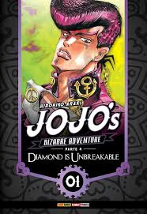
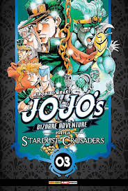

Ambientada em Morioh, a Parte 4 foca em Josuke Higashikata e seu Stand, Shining Diamond.
Junto com seus amigos, ele investiga crimes misteriosos e usuários de Stand escondidos na cidade,
unindo mistério, ação e momentos cotidianos com o estilo inconfundível de JoJo.
link direto para compra
Jotaro Kujo desenvolve o poder "Stand" e viaja do Japão ao Egito com seu avô Joseph Joestar e aliados.
Eles enfrentam assassinos enviados por DIO, o vilão imortal que roubou o corpo de Jonathan Joestar,
para salvar a mãe de Jotaro, Holly, cujo Stand a está consumindo.
link direto para compra